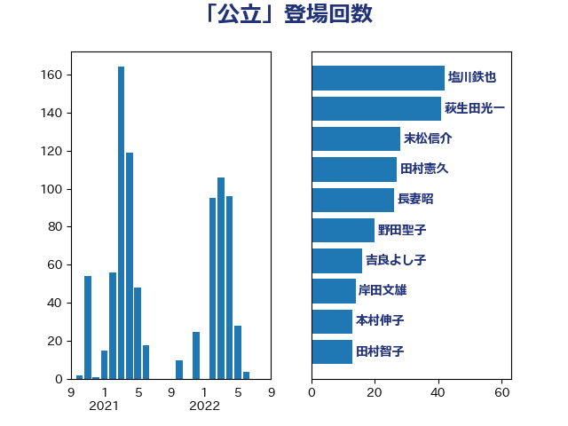

単語「公立」

| 塩川鉄也 | 日本共産党 | 42 回 |
| 萩生田光一 | 自由民主党 | 41 回 |
| 末松信介 | 自由民主党 | 28 回 |
| 田村憲久 | 自由民主党 | 27 回 |
| 長妻昭 | 立憲民主党 | 26 回 |
| 野田聖子 | 自由民主党 | 20 回 |
| 吉良よし子 | 日本共産党 | 16 回 |
| 岸田文雄 | 自由民主党 | 14 回 |
| 本村伸子 | 日本共産党 | 13 回 |
| 田村智子 | 日本共産党 | 13 回 |
| 吉川元 | 立憲民主党 | 12 回 |
| 斎藤嘉隆 | 立憲民主党 | 11 回 |
| 伊藤孝恵 | 国民民主党 | 10 回 |
| 倉林明子 | 日本共産党 | 9 回 |
| 太田房江 | 自由民主党 | 9 回 |
| 杉尾秀哉 | 立憲民主党 | 8 回 |
| 宮本徹 | 日本共産党 | 7 回 |
| 岸真紀子 | 立憲民主党 | 7 回 |
| 櫻井周 | 立憲民主党 | 7 回 |
| 深澤陽一 | 自由民主党 | 7 回 |
| 舩後靖彦 | れいわ新選組 | 7 回 |
| 菅義偉 | 自由民主党 | 7 回 |
| 長谷川淳二 | 自由民主党 | 7 回 |
| 高橋千鶴子 | 日本共産党 | 7 回 |
| 宮口治子 | 立憲民主党 | 6 回 |
| 小池晃 | 日本共産党 | 6 回 |
| 浮島智子 | 公明党 | 6 回 |
| 笠浩史 | 無所属 | 6 回 |
| 荒井優 | 立憲民主党 | 6 回 |
| 国光あやの | 自由民主党 | 5 回 |
| 宮本岳志 | 日本共産党 | 5 回 |
| 川田龍平 | 立憲民主党 | 5 回 |
| 志位和夫 | 日本共産党 | 5 回 |
| 柴田巧 | 日本維新の会 | 5 回 |
| 梅谷守 | 立憲民主党 | 5 回 |
| 福島みずほ | 社会民主党 | 5 回 |
| 上野通子 | 自由民主党 | 4 回 |
| 中島克仁 | 立憲民主党 | 4 回 |
| 伊藤岳 | 日本共産党 | 4 回 |
| 佐々木さやか | 公明党 | 4 回 |
| 吉田はるみ | 立憲民主党 | 4 回 |
| 後藤茂之 | 自由民主党 | 4 回 |
| 横沢高徳 | 立憲民主党 | 4 回 |
| 田島麻衣子 | 立憲民主党 | 4 回 |
| 道下大樹 | 立憲民主党 | 4 回 |
| 仁木博文 | 無所属 | 3 回 |
| 堤かなめ | 立憲民主党 | 3 回 |
| 岬麻紀 | 日本維新の会 | 3 回 |
| 東徹 | 日本維新の会 | 3 回 |
| 水岡俊一 | 立憲民主党 | 3 回 |
| 芳賀道也 | 国民民主党 | 3 回 |
| 菊田真紀子 | 立憲民主党 | 3 回 |
| 西村智奈美 | 立憲民主党 | 3 回 |
| 赤羽一嘉 | 公明党 | 3 回 |
| 鰐淵洋子 | 公明党 | 3 回 |
| 下野六太 | 公明党 | 2 回 |
| 丹羽秀樹 | 自由民主党 | 2 回 |
| 勝部賢志 | 立憲民主党 | 2 回 |
| 坂本哲志 | 自由民主党 | 2 回 |
| 城井崇 | 立憲民主党 | 2 回 |
| 寺田学 | 立憲民主党 | 2 回 |
| 岡本あき子 | 立憲民主党 | 2 回 |
| 岡本三成 | 公明党 | 2 回 |
| 斎藤洋明 | 自由民主党 | 2 回 |
| 浅野哲 | 国民民主党 | 2 回 |
| 片山大介 | 日本維新の会 | 2 回 |
| 田村まみ | 国民民主党 | 2 回 |
| 矢倉克夫 | 公明党 | 2 回 |
| 石川博崇 | 公明党 | 2 回 |
| 竹内譲 | 公明党 | 2 回 |
| 谷田川元 | 立憲民主党 | 2 回 |
| 阿部知子 | 立憲民主党 | 2 回 |
| 馬淵澄夫 | 立憲民主党 | 2 回 |
| 高木かおり | 日本維新の会 | 2 回 |
| 中川正春 | 立憲民主党 | 1 回 |
| 中谷真一 | 自由民主党 | 1 回 |
| 中野洋昌 | 公明党 | 1 回 |
| 二階俊博 | 自由民主党 | 1 回 |
| 伊藤孝江 | 公明党 | 1 回 |
| 務台俊介 | 自由民主党 | 1 回 |
| 吉田久美子 | 公明党 | 1 回 |
| 塩村あやか | 立憲民主党 | 1 回 |
| 塩田博昭 | 公明党 | 1 回 |
| 大石あきこ | れいわ新選組 | 1 回 |
| 安江伸夫 | 公明党 | 1 回 |
| 宮崎政久 | 自由民主党 | 1 回 |
| 山口那津男 | 公明党 | 1 回 |
| 山東昭子 | 自由民主党 | 1 回 |
| 山添拓 | 日本共産党 | 1 回 |
| 山際大志郎 | 自由民主党 | 1 回 |
| 岩渕友 | 日本共産党 | 1 回 |
| 島村大 | 自由民主党 | 1 回 |
| 平井卓也 | 自由民主党 | 1 回 |
| 庄子賢一 | 公明党 | 1 回 |
| 打越さく良 | 立憲民主党 | 1 回 |
| 斉藤鉄夫 | 公明党 | 1 回 |
| 早坂敦 | 日本維新の会 | 1 回 |
| 杉田水脈 | 自由民主党 | 1 回 |
| 枝野幸男 | 立憲民主党 | 1 回 |
| 根本幸典 | 自由民主党 | 1 回 |
| 梅村みずほ | 日本維新の会 | 1 回 |
| 源馬謙太郎 | 立憲民主党 | 1 回 |
| 田畑裕明 | 自由民主党 | 1 回 |
| 田野瀬太道 | 無所属 | 1 回 |
| 白石洋一 | 立憲民主党 | 1 回 |
| 石井苗子 | 日本維新の会 | 1 回 |
| 石川大我 | 立憲民主党 | 1 回 |
| 石川香織 | 立憲民主党 | 1 回 |
| 緑川貴士 | 立憲民主党 | 1 回 |
| 義家弘介 | 自由民主党 | 1 回 |
| 舞立昇治 | 自由民主党 | 1 回 |
| 西岡秀子 | 国民民主党 | 1 回 |
| 角田秀穂 | 公明党 | 1 回 |
| 赤池誠章 | 自由民主党 | 1 回 |
| 辻元清美 | 立憲民主党 | 1 回 |
| 野上浩太郎 | 自由民主党 | 1 回 |
| 野間健 | 立憲民主党 | 1 回 |
| 阿部司 | 日本維新の会 | 1 回 |
| 青木愛 | 立憲民主党 | 1 回 |
| 須藤元気 | 無所属 | 1 回 |